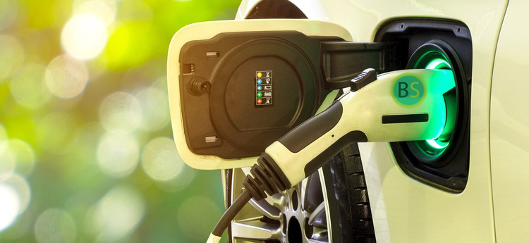
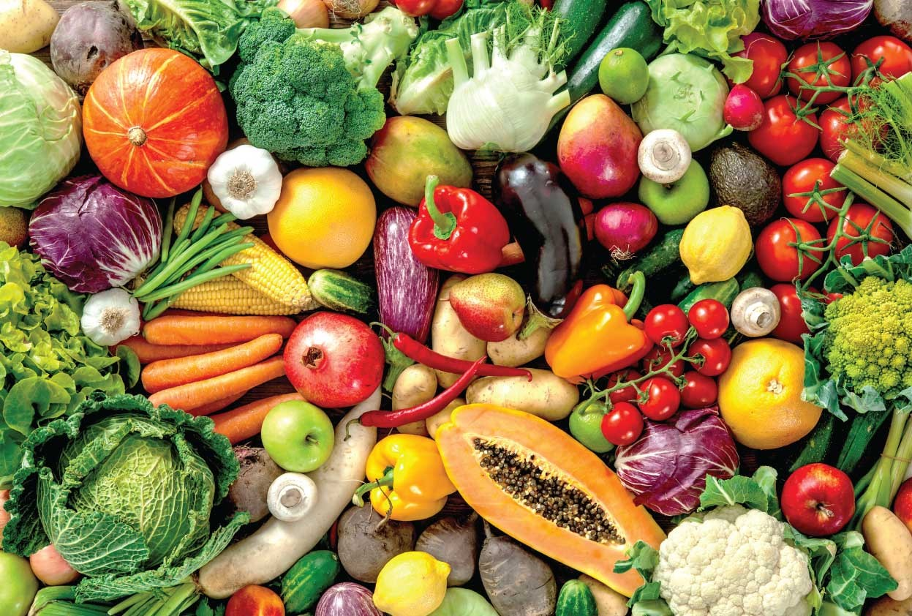
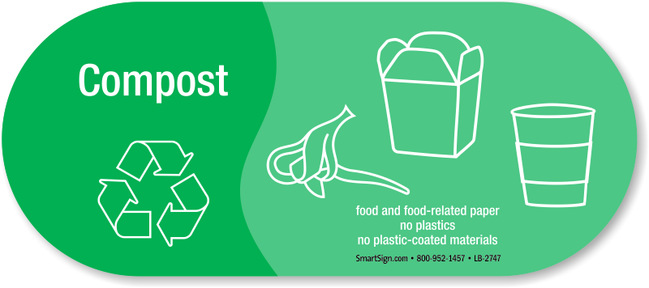

EV Charging Stations Powered By Food Waste

What are BioStations?
BioStations are electric vehicle (EV) charging stations powered by food waste.
Research and development of BioStations technology is partially funded by a grant
from the National Science Foundation (NSF) and a contract with the Defense Advanced
Research Projects Agency (DARPA).

Food Waste
Between one-third to one-half of all food produced globally becomes food waste.
Most of this food is disposed into industrial trash compactors behind restaurants and grocery stores.
Grocery stores produce an average 250kg of food waste per day.

Is there enough energy in food waste?
One pound of food waste is roughly equal to 2 million Joules of energy.
To fully charge an average EV battery (60kWh) takes around 54 kg of biomass (1kg ~ 4 million Joules).
This is plenty energy to fully power several electric vehicles per day.
However the BioStation technology is designed as a supplement to other sources of energy including
solar and power grid.
Who is involved?
BioStations has created partnerships with many local businesses and organizations.
Plans have already been made to install BioStations at each of the involved businesses.